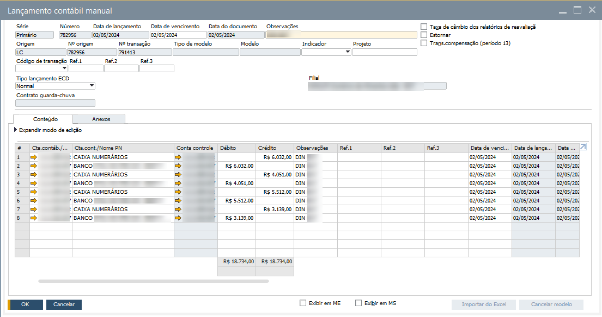
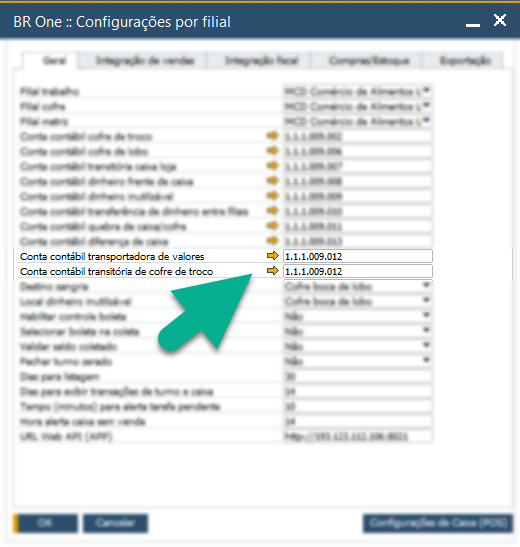
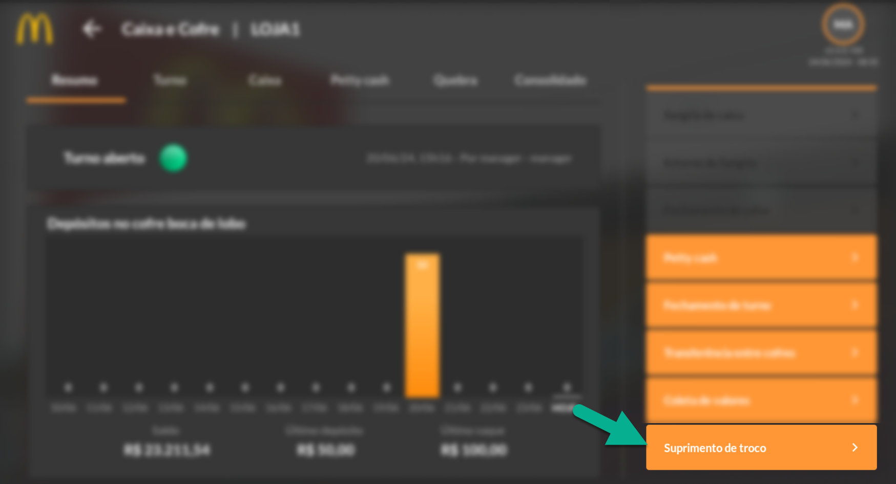
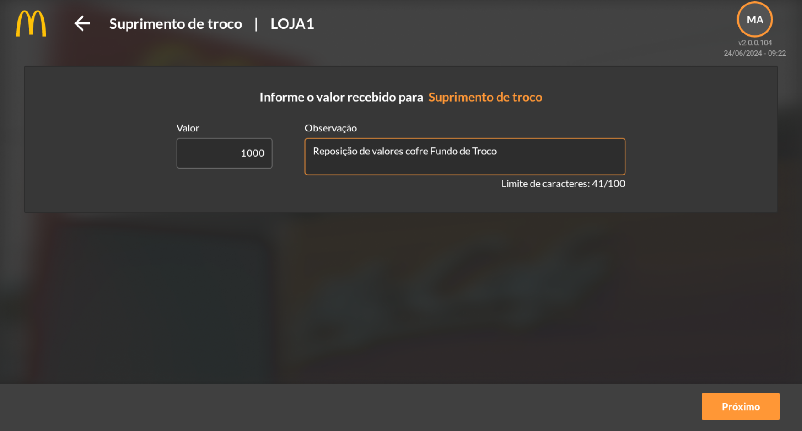
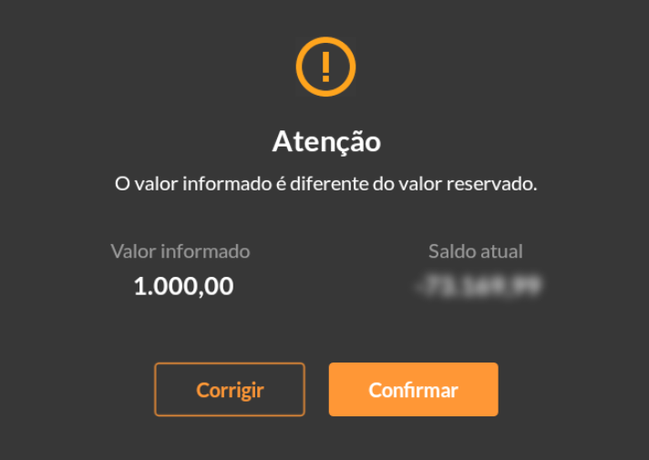
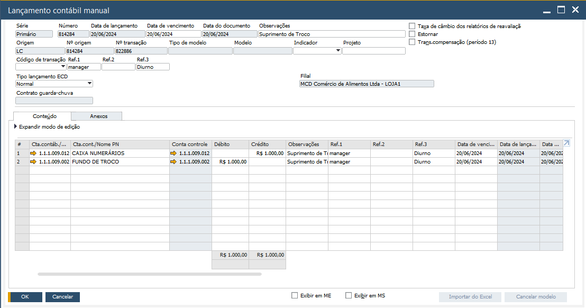
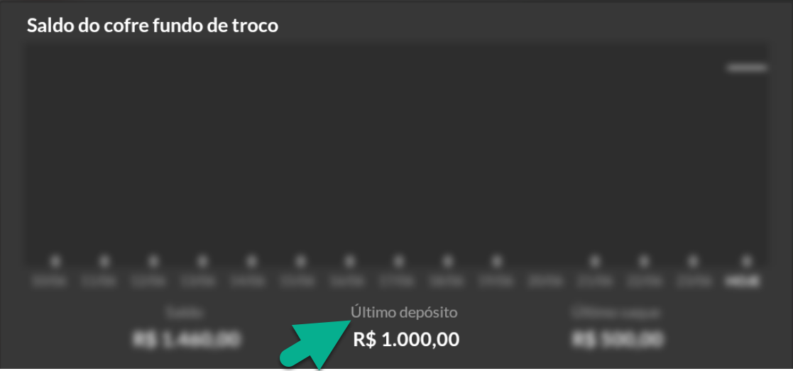

Suprimento de Troco
O Suprimento de Troco são os valores destinados aos depósitos em Fundo de Troco recebidos pelo banco. Esses valores serão alocados em Caixa Numerários ficando disponível para a transferência ao Fundo de Troco.
Neste caso, os lançamentos em relação ao processo serão: D – Numerários / C – Conta Banco e D – Fundo de Troco / C – Numerários. A conta Caixa Numerários tem função transitória em relação aos valores transacionados entre os cofres Fundo de Troco e Boca de Lobo.
Todo o valor coletado pela transportadora de valores, poderá ser configurado como destino na conta caixa numerários como transitória do montante caso o destino (contas bancárias) não seja único. Com isso, a conta Caixa Numerários poderia ser utilizada como contrapartida para os débitos contábeis nas devidas contas bancárias. Veja o exemplo abaixo:
{kind=link}
Veja abaixo as configurações de “conta contábil transportadora de valores” e “Conta contábil transitória de cofre troco” nas Configurações por Filial do BROne Franquias.
{kind=link}
Com isso, os valores destinados ao suprimento de troco serão os disponíveis em Caixa Numerários. O escritório deverá informar a loja o montante disponível para suprimento. A loja deverá acessar o módulo pelo app.
{kind=link}
Ao clicar em Suprimento de Troco, deverá ser informado o valor informado para alocação no Fundo de Troco. Defina também uma descrição do suprimento.
{kind=link}
Ao informar o valor e clicar em próximo, o app mostrará o valor informado com relação ao disponível para suprimento na conta contábil Caixa Numerários. Verifique se o valor informado está de acordo com o real a ser recebido, confirme e transação ou faça as correções necessárias.
IMPORTANTE: A definição as contas contábeis destinas ao controle das transações de fundo de troco poderão ser alteradas/configuradas nas configurações por filais do BROne Franquias no SAP Business One. Essas configurações deverão ser realizadas por filial/quiosque
{kind=link}
Finalizada a ação, será apresentada a mensagem dizendo que o LCM foi gerado com sucesso. LCM refere-se ao Lançamento Contábil Manual realizado no SAP de forma automática em decorrências do processo realizado no app.
{kind=link}
Veja abaixo o lançamento realizado no SAP.
{kind=link}
O processo estará finalizado. Ao retornar a tela de resumo do módulo Caixa e Cofre, note que o valor de último depósito no “Saldo do cofre fundo de troco” está com o valor adicionado pelo processo de suprimento de troco.
{kind=link}